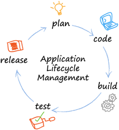
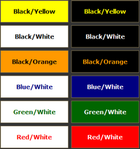
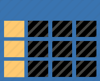

Welcome to CMST 386
This is a classic Face-to-Face class and we meet entirely in person. There will be no online discussions and if you have a question you can ask in class or email me at
I will post handouts and hyperlinks to videos for the class on this web page which is accessible through the URL https://okinawabob.github.io/umuc/cmst386/
Please bookmark (favorites) this URL in your browser so that you can easily return to it as the course progresses.
So lets get started…
The course has as a prerequisite CMST385 to insure students come into the class with intermediate computer skills and a basic understanding of HTML, CSS, and web images.
The primary references for the class will be the following web sites:
- www.w3schools.com/html/ a great reference for both HTML and CSS
- learn.shayhowe.com/ created by a professional web developer.
UMUC no longer utilizes books for their courses, because free online resources have been setup for the course as can be viewed at LEO.
Print all Week 1 materials described below that are posted as PDF files. I recommend using the freeware version of PDFXChangeViewer, which allows you to make notes and save them to any PDF file or you can use Adobe Acrobat Reader.
All software used in this class is freeware and I strive to find software that can be run on all common operating systems (Windows, MacOSX, Linux).
I recommend that you get started with Week 1 content today, by clicking Week 1 in the navigation bar above or scrolling down.
Robert Laurie
Week 1: Setup, HTML5 Review, and SEO
 The first week we will be getting familiar with our new web server which will utilize GitHub Pages. Pancake.io seems to have become unreliable so time for a change. This requires you to get a GitHub account. I have including links to videos that describe GitHub below. Please view so you have a better understanding of GitHub and the Git VCS.
The first week we will be getting familiar with our new web server which will utilize GitHub Pages. Pancake.io seems to have become unreliable so time for a change. This requires you to get a GitHub account. I have including links to videos that describe GitHub below. Please view so you have a better understanding of GitHub and the Git VCS.
- GitHub for Noobs (1/4) – A Short History
- GitHub for Noobs (2/4) – Common Workflows
- GitHub for Noobs (3/4) Using the GitHub Desktop App (Stop Here)
- GitHub for Noobs (4/4) Using the Command Line (Optional)
Check out this ebook titled GitHub Succinctly PDF or MOBI.
is primarily lecture with some hands on setup and HTML coding is required for Assignment 1. The first class will cover a general explanation of the terminology, components that make up the Internet, and World Wide Web. You will be learning HTML5 and CSS3 coding in this class and you are expected to use these standards for all assignments in the class.Read LEO > Week 1 > Introduction to the Internet
www.w3schools.com is an excellent tutorial and reference web site that will be used as the primary source of information. They offer certificates for $95 if you are looking for a certificate in this area.
Please read and work through the first 7 chapters of www.w3schools.com - HTML(5) Tutorial prior to the first class.
- HTML Introduction
- HTML Editors
- HTML Basic
- HTML Elements
- HTML Attributes
- HTML Headings
- HTML Paragraphs
Bring your notebook computer to class, because there will be some class time for demonstration, hands-on coding, and asking questions. You also need to bring a USB Thumb Drive to class for storing and transferring computer files.
I will utilize PowerPoint slides to introduce HTML and CSS concepts throughout the class. Please print the slide set and all posted PDF documents as they will be your primary source of information in the class. PowerPoint handouts are posted with four slides per page, and it is best to print in color so that you can see the syntax format of the code:
- Slide Set 1: Document and Block HTML Elements
- HTML File Names Handout
- Writing Valid HTML
- Assignment 1: HTML - Part A Due August 30
Software to download and install for the class:
- Firefox Browser by Mozilla (Windows, MacOSX, Linux)
- Komodo Edit (Windows, MacOSX, Linux) is freeware and excellent Text Editor. It has code templates and code completion features for creating HTML documents. (Caution! Do not download Komodo IDE trial).
- Notepad++ (Windows) small and fast text editor for windows only.
- DropBox will be used used to store files and also as a web host. If you are not already a member of Dropbox, then please click here.
- Download and install Dropbox to your home computers.
- Create a login and password for Dropbox and don’t forget it.
- You will need to select one folder for Dropbox so make it easy to find.
- Create a sub-folder called CMST385_YourName, where YourName is your name. Store all resource files for the course in this folder.
- Pancake.io is a great way to host a free website using DropBox.
- Uses DropBox sub folder located at Dropbox\Apps\Pancake.io.
- All files placed in the folder will be hosted as a static website.
- yourURL.pancakeapps.com will be the URL for tout web site after setting up Pancake.io and linking to your DropBox.
I have created a short 3 minute video about how to setup a Dropbox Pancake.io Web Sever available at http://www.screencast.com/t/lPFiTbJs
Videos available on YouTube for viewing this week:
- How the Internet Works in 5 Minutes
- Komodo Edit Tutorial - LearnToProgram
- Basic HTML #1 - Komodo Edit
- [Dropbox Tutorial](https://youtu.be/gybe_YlpAe4 “Right click this link and open in new tab” “Right click this link and open in new tab”)
- LittleWebHut HTML5 Video Tutorial - Part 1 - The Basics
- LittleWebHut HTML5 Video Tutorial - Part 2 - Text
- thenewboston HTML Tutorial - 2 - Creating our First Webpage
- thenewboston HTML Tutorial - 3 - body and headers
- thenewboston HTML Tutorial - 4 - Paragraphs and Line Breaks
Week 2: HTML - Inline, Lists, and Links
This week we will cover the topics of inline elements, symbols, and lists. Bring your notebook computer to class, because there will be some class time for demonstration, hands-on coding, and asking questions. You also need to bring a USB Thumb Drive to class for storing and transferring computer files.
Read LEO > Week 2 > Planning and Creating Websites
Continue to work through www.w3schools.com - HTML(5) Tutorial. Read and work through the following 8 chapters prior to class this week:
- HTML Formatting
- HTML Computercode
- HTML Comments
- HTML Symbols
- HTML Entities
- HTML Encoding (Character Sets)
- HTML Head
- HTML Lists
- Browser popularity table
- Browser support information
Please print the slide set and all posted PDF documents as they will be your primary source of information in the class:
- Slide Set 2: Inline HTML Elements and Symbols
- Slide Set 3: Lists and HyperLinks
- Assignment 1: HTML - Part B - Due September 1
- Assignment 1: HTML - Part C - Due September 6 use BillOfRights.ascii
- Assignment 1: HTML - Part D - Due September 8
- Assignment 1: HTML - Part E - Due September 13 submit URLs on LEO
Videos available on YouTube for viewing this week:
- thenewboston HTML Tutorial - Bold, Italics, and Comments
- thenewboston HTML Tutorial - Lists
- thenewboston HTML Tutorial - Adding Links to our Webpage
- thenewboston HTML Tutorial - Creating a Link Within a Web Page
- thenewboston HTML Tutorial - Email Links and Tool Tips
- Should I Learn XHTML or HTML5?
- How does HTML5 compares to HTML4?
Week 3: Colors and Web Graphics
This week we will cover the topics of specifying colors and utilizing web images. When selecting color combinations it is important to select colors that have high contrast so they are easily readable. Therefore, it is best to select dark text and light back-ground colors, which also optimizes a web page for printing.
Read LEO > Week 3 > Working with Images
Please print the slide set and all posted PDF documents as they will be your primary source of information in the class:
- Number Systems and Codes Handout
- Slide Set 4: Colors and Graphics
- Assignment 2: Colors, Images, and Inline Styles
Continue to work through www.w3schools.com - HTML(5) Tutorial. Read and work through the following chapters prior to class this week:
Some web sites to search for images:
- http://www.freebuttons.com
- http://bgrepeat.com/most-dl
- https://images.google.com/
- https://www.flickr.com/creativecommons/
- https://search.creativecommons.org/
You will need to use an image editor to develop web graphics this week. One possibility for freeware is the GIMP, which is available for free and runs on Windows, MacOS, and Linux. GIMP has most of the features as Adobe PhotoShop including layer capability. Another easy to use graphics editor that works well on windows is PhotoFiltre V6 or V7 freeware.
Inkscape is a powerful Open Source vector graphics program that works on Windows, MacOS, and Linux. It has many features, which will take much time to master.
You can download these freeware files at the links below and also find a PDF users manual and online manual at:
- The GIMP Raster Graphics Editor (Windows, MacOSX, Linux)
- PhotoFiltre Raster Graphics Editor (Windows Only)
- Inkscape Vector Graphics Editor (Windows, MacOSX, Linux)
Videos available on YouTube for viewing this week:
- LittleWebHut HTML5 Tutorial - Part 3 - Images and Hyperlinks
- thenewboston HTML Tutorial - Adding Images to the Webpage
- thenewboston HTML Tutorial - Resizing Images
- What is the difference between HTML5 and CSS3?
Week 4: CSS Formatting Documents
This week we will introduce CSS, as a method for controlling the presentation of a web page or an entire web site. Assignment 3 will be modifying your existing web pages using CSS. No browser supports the entire CSS version 3 specification so it is best to learn and use CSS version 2 properties first, which are supported by all modern browsers. We will focus on CSS2 properties this week as an introduction to CSS and all CSS2 properties are upwardly comparable with CSS3.
Read LEO > Week 4 > Communicating over the Internet
Please print the slide set and all posted PDF documents as they will be your primary source of information in the class:
- Slide Set 5: CSS Formatting
- Assignment 3: CSS Formatting - Due Sept 25
- CSS2 Quick Reference (2 pages)
Continue to work through www.w3schools.com - CSS Tutorial. Read and work through the following chapters prior to class this week:
Work through learn.shayhowe.com - Learn to Code HTML & CSS. Read and work through the following guides prior to class this week:
Some web sites to search for images:
- https://css-tricks.com/rems-ems/
- R.I.P. rem viva CSS reference pixels
- http://caniuse.com
- Future CSS Marker
- Prefix ordered list item numbers with a static string using css
Videos available on YouTube for viewing this week:
Week 5: HTML5 and CSS Page Layout
This week we will introduce Structural Page Layout, as a method for dividing a web page into sections and controlling the presentation of a web page or an entire web site. This must be demonstrated on your Final Website Project.
Please print the slide set and all posted PDF documents as they will be your primary source of information in the class:
- Slide Set 6: CSS Layout
- My Bill of Rights web page - Please dissect to learn Page Layout HTML5/CSS
- Slide Set 7: Design Principles
- Assignment 4: Final Web Site Project
- Topic Proposal Discussion - Due Saturday, Sep 27
- Final Web Site Project Presentation - Last class
Work through learn.shayhowe.com - Learn to Code HTML & CSS. We will be shifting to this web site for the remainder of the course as it provides the prospective of a professional web developer. The www.w3schools.com website will be useful as a reference for the remainder of the course, but I will not formally assign sections for this website. Read and work through the following guides prior to class this week:
Videos available on YouTube for viewing this week:
- Little Web Hut - HTML5
- thenewboston - HTML5 Tutorial
- HTML5 Tutorial - 3 - Setting up the body
- HTML5 Tutorial - 4 - Adding the Meat!
- HTML5 Tutorial - 5 - Attribute Selectors
- HTML5 Tutorial - 6 - Introduction to pseudo-classes
- HTML5 Tutorial - 9 - Laying Out the Website
- HTML5 Tutorial - 10 - Starting the Styling
- HTML5 Tutorial - 11 - Styling the Navigation Menu
- HTML5 Tutorial - 12 - Making Everything Pretty
- HTML5 Tutorial - 13 - Finishing the Layout
Week 6: HTML5 and CSS3 Tables
This week we will introduce HTML Tables, as a method for organizing information in tabular form. This must be demonstrated on your Final Website Project.
Please print the slide set and all posted PDF documents as they will be your primary source of information in the class:
- Slide Set 8: HTML Tables
- Assignment 4: Final Web Site Project
- Topic Proposal Discussion - Was Due Sep 27 - You are now late and points are being deducted
- Final Web Site Project Presentation - Last class
Work through learn.shayhowe.com - Learn to Code HTML & CSS. The www.w3schools.com website will be useful as a reference for the remainder of the course, but I will not formally assign sections for this website. Read and work through the following Lessons prior to class this week:
Videos available on YouTube for viewing this week:
- HTML 5 - Creating and Formatting Tables Using CSS
- thenewboston - 11 - HTML Tables
- thenewboston - 12 - HTML Table Headers
- thenewboston - 13 - HTML Table colspan
- thenewboston - 14 - HTML Table width, cellpadding, and cellspacing
- thenewboston - 26 - CSS Styling Tables
Week 7: Forms and Tinsel for your web sites
This week we will discuss adding some extras to your web site like gradients, audio, videos. Also we will look at BlueGriffion.org and interesting freeware application that allows you to create web sites using drag and drop. Warning though it can mess up your code!
Please print the slide set and all posted PDF documents as they will be your primary source of information in the class:
- HTML5 Element Quick Reference (4 pages) provides and overview of all HTML version 4 and 5 elements. Do not use element with only HTML Version 4 support which have a gray background color, because these are deprecated in HTML5.
- CSS3 Properites and Selectors Quick Reference (5 pages) provides and overview of all CSS3 elements. No browser supports all of these properties so be share to view in popular browsers.
- Check Browser Support for CSS Properties
- CSS2 Properites and Selectors Quick Reference provides and overview of all CSS2 elements with full browsers support.
- CSS1 Properites and Selectors Quick Reference provides and overview of CSS1 elements with full browsers support.
Work through learn.shayhowe.com - Learn to Code HTML & CSS. The www.w3schools.com website will be useful as a reference for the remainder of the course, but I will not formally assign sections for this website. Read and work through the following Lessons prior to class this week:
Web Site Topics and Links
| Name | Uniform Resource Locator | Topic |
|---|---|---|
| Xzabier Arebalo | http://xzabiera.pancakeapps.com/ | How to be a web developer |
| Andre Bryant | http://andrebryantcmst.pancakeapps.com/ | Motorsport Drifting |
| Pahlo Easley-Correa | http://pahlo.pancakeapps.com/ | Photography Home Biz |
| Nikah Holmes | http://nikky.pancakeapps.com/ | Motorcycle School Web Site |
| Dana Lucio | http://dlucio.pancakeapps.com/ | 31 Handbags Home Biz |
| Jazumin Nishihara | http://jazumin.pancakeapps.com/ | Okinawa Dog Activities |
| Kayleigh Owen | http://kowen.pancakeapps.com/ | Being a Bard (story teller) |
| Kristy Stroll | http://kstroll.pancakeapps.com/ | Balloon Biz |
| Randie Wilson | http://rwilson.pancakeapps.com/ | Natural Hair |